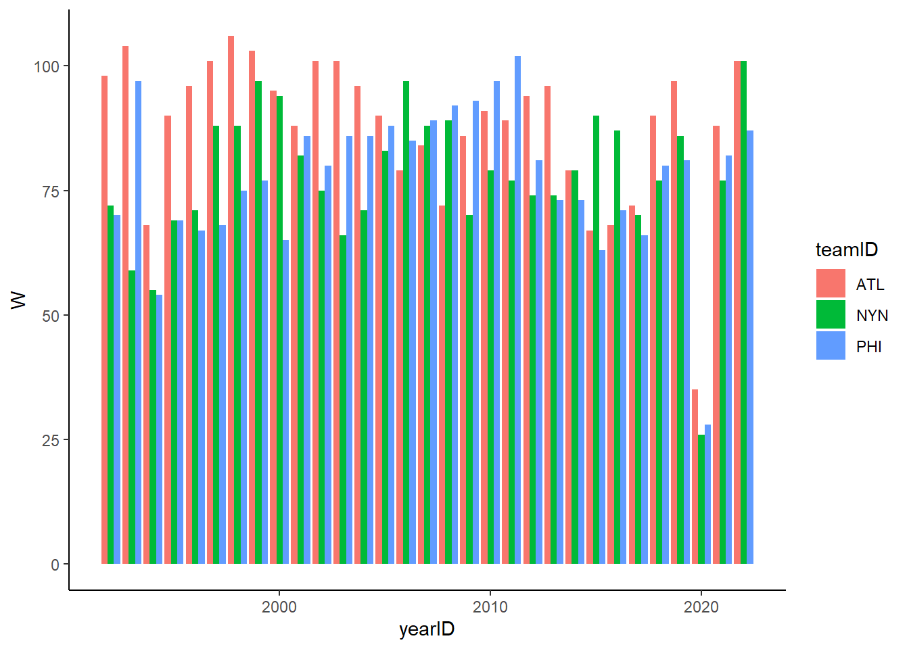

In this course, we have learned about many fundamental visualizations in data science. We’ve learned how to use ggplot2 functions and functionality to modify these visualizations to enhance their interpretability and thus their success in communicating the intended message.
However, what we have learned in this course is only the beginning. There are many, many types of visualizations that serve various purposes.
At the end of this course, I wanted to introduce you to two that I have found to be particularly useful: a heatmap and a dendrogram.
7.2 Heatmaps
7.2.1 A Comparison with Bar Charts
Suppose we are interested in seeing how certain teams in the current National League East (NL East) Division of Major League Baseball (MLB), have performed (in terms of regular season wins) over the previous 30 seasons (1992 - 2022). Before we start thinking about visualizations, let’s first get the data into the right format:
library(tidyverse)library(Lahman)nleast <- Teams |>filter(between(yearID,1992,2022) & teamID %in%c("ATL","PHI","NYN")) |>select(yearID,teamID,W)nleast |>glimpse()
We can see that our data contain information related to the number of wins for the Atlanta Braves, Philadelphia Phillies, and New York Mets over the given time interval.
Now recall, one way we could visualize these data is by using a stacked or grouped bar chart. However, also recall that one of the primary limitations of those visualizations is the number of bars/groups being visualized/compared.
For instance, if we tried to create a vertical grouped bar chart:
nleast |>ggplot(aes(x = yearID, y = W, fill = teamID)) +geom_bar(stat ='identity', position =position_dodge()) +theme_classic()

This chart is too busy to effectively achieve its aim: comparing team wins over time. So what do we do instead?
This is where a heatmap might be a more effective tool.
7.2.2 Generating a Heatmap with geom_tile
Imagine instead of using bars to represent these data, we instead use a grid (or cells if you think about it like an Excel spreadsheet).
The rows of the grid perhaps represent the teams and the columns represent the years. The values of the cells represent the wins for a given team during a given year. Essentially, this way of visualizing the data is very similar to how it is organized in its data table.
To do this, we can make use of a new geom called geom_tile:
This is better than what we had previously because more interpretable information is given in the same space. However, the raw values being rendered on the visualization without any differentiation still makes the main task of comparison very difficult. Here, color may be a useful tool for quick comparisons!
In general, using color to differentiate values in this grid-like visualization are hallmarks of a heatmap.
Here, notice that I removed the text labels because the different shades of blue serve the same purpose as the labels themselves. If we want to change the color palette, we can use syntax similar to what we used for changing color palettes in prior sections.
What does this visualization tell us? The Braves have tended to have longer periods of sustained regular season success compared to the other teams. The Phillies performed best during the 2000 - 2012 period and the Mets had some good performances in the midst of some middling performances. We also see the season disrupted by the COVID-19 pandemic (2020).
Remember, the value of this type of visualization is its ability to communicate a lot of information in a simpler and more accessible way. Heatmaps are common in genomic research where hundreds or thousands of genes may be compared simultaneously.